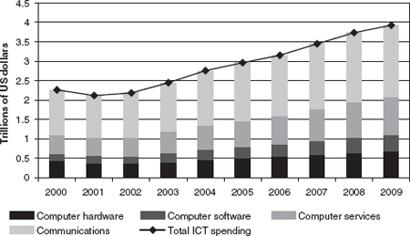

1 The Next Revolution in Global Information and Communication Markets
This book focuses on the ICT infrastructure, the intersection of communications networks with the infrastructure and applications of information technology. The networked information infrastructure that blends computing and communications is the largest construction project in human history. The money and the effort required to build this infrastructure dwarf what was needed to erect the pyramids of Egypt or the Great Wall of China. The initial investment created a huge global market for information and communications technology, estimated to grow to almost $4 trillion by 2009. (Figure 1.1 tracks the growth of the hardware, software, services, and communications market segments from 1999 to 2009.1)
An inflection point, according to former Intel chairman Andy Grove, “occurs where the old strategic picture dissolves and gives way to the new.”2 Today we are at a new inflection point for the ICT infrastructure. All the components of the infrastructure are becoming modular, and powerful broadband networks are becoming ubiquitous. When we speak of modularity, think of Lego building blocks of many shapes that can be easily mixed and matched because they have standardized interfaces to stick them together. ICT technology is becoming both modular and radically cheaper. The equipment industry knows this path well, as is evident in consumer electronics. But now software and content are following the same path. At the same time, ubiquitous wired and wireless broadband can meld these ICT capabilities together into far more powerful applications, and these applications can escape the boundaries of office buildings and literally be everywhere.
Modularity and broadband mean that convergence of services and equipment will defy traditional market boundaries. Television programs seen in the United States may originate on French television broadcasts and be delivered to American viewers by broadband Internet. The distinctions between telephone and data services are rapidly disappearing. Decisions on whether to store data on networked databases or on inexpensive home terminals are a matter of design form and function, because storage is cheap and Web browsers make it easier to switch between data formats. Players in ICT markets are scrambling to adapt to this rapidly emerging environment. Many of their assumptions about how ICT markets operate—assumptions based on competitive experience—will not be accurate guides to the future. Meanwhile, government policies have segmented the markets in ways that do not fit the new realities. In the absence of significant policy reforms, global economic prospects will diminish, perhaps markedly. This challenge raises the central question we address in this book: How can national and global policies best fulfill the promise of this inflection point in the global ICT infrastructure?

Figure 1.1
Total ICT spending, 2000-2009. Source: Digital Planet: The Global Information Economy (2006 report by World Information Technology and Services Alliance), at http://www.witsa.org.
We are especially concerned with public policy because it was, and will continue to be, a critical driver of the ICT infrastructure’s evolution. This may surprise some in the technology community, because it has a habit of retrospectively assuming that the march of technology was inevitable. But this view conveniently forgets the many battles over policy and markets that shaped the market’s path. Consider, for example, the history of international long-distance services. In 1949, Wall Street attorneys still considered it a status symbol to “reserve” an operator-assisted call from New York to London. By 1979, you could punch a few numbers and the right phone would ring thousands of miles away, but high prices kept international calling a luxury. It was not until 1999 that the price of global calling plunged to the level of the mass market. The 20-year lag between technological capability and attractive pricing was a product of policies and corporate strategies that propped up the cost of international calling. To change pricing required major shifts in national competition policy and in world trade rules. (See chapter 7.)
In 1967, television still offered only 5–10 channels, and programming was geared to the median viewer. In 2007, more than 100 channels appealed to minutely dissected audiences, such as aficionados of trout fishing or cooking. The proliferation of channels was stimulated by government policies that limited the ability of a few networks to lock up programming rights. The growth of cable television, in turn, created a competing infrastructure for broadband computer networking. Today most channels still are national, but a combination of hardware and Web innovators is making a television program offered in any local market instantly available globally. Dealing with the clash of digital universality and regulatory nationalism will require policy choices.
In 1984, telephone companies thought of computer networking as just another extension of phone calling, and they projected a computer network, operating at low speed, that would be rolled out at a stately pace. Computer networking and online commerce would look vastly different today if public policy had not cumulatively tilted in favor of the engineers and entrepreneurs who became the pioneers of the Internet architecture and its applications. The policy decisions that spurred network competition accelerated the commercial deployment of email and hastened the triumph of the Internet. The Internet’s roots rest firmly in a government-funded research community that was forced to become a protagonist in conflicts over ICT infrastructure policy. (See chapter 9.) Their engineering and policy triumphs made it possible for email messages, instant messages, and Web-based e-commerce using the Internet protocols to seamlessly tie the world together at a fraction of the price of phone calls. By 2007, YouTube and its Web rivals were serving up the personal videos of millions of amateur auteurs and traditional media companies were posting vignettes from their most popular broadcasts, thus setting the stage for policy contests over the control of intellectual property on the Web.
The triumph of the Internet, the increase in broadcast alternatives, and the dizzying flow of innovations on the Web are not the happy endings of a Hollywood tale of “white hats” and “black hats.” The Internet did not emerge simply because wise engineers won support from enlightened government technocrats. It also depended on support from companies with particular competitive interests and from political leaders who wanted to position their parties as champions of the computer industry. In short, in today’s world many different private interests back different visions of the public interest. Complex political bargaining and business strategizing produce politically inspired guidance of the modern ICT infrastructures. This is more than a struggle pitting the public interest against special interests.
We emphasize the importance of politics and policy because of the broader historical record. Throughout recorded history, governments have claimed a prominent role in shaping the infrastructure. Their specific roles changed over the centuries as enterprising rulers tried to consolidate their power by providing critical infrastructures (such as roads, water, energy, and communications) to promote security, health, and commerce.3 Often, governments owned and operated these infrastructures.
Today, the private sector often owns and operates ICT infrastructures, and markets have become more competitive. Governments’ interest remains strong, but competition and privatization have reoriented their role. ICT infrastructures, for example, have special economic characteristics that invite oversight by competition authorities. Moreover, all governments pursue other goals, among them universal service, industrial policy, national security, network reliability and security, and consumer protection. For example, balancing the efficient provision of the infrastructure and its services with social objectives (e.g., universal telephone service) has led to large distortions in ICT markets.
Governments’ rules for ICT infrastructures rest on complex political and economic bargains, not always formally proclaimed. Some economists decry most government regulation, but the politicians’ romance with intervention is (to borrow a phrase from Cole Porter) here to stay.
If politics shape important policy choices, whose politics matter the most for the world market? We argue that until about 2025 the United States will be able to lead, but not to dictate, the world’s choices about future policies. China, India, and other countries will grow in influence, but the United States will remain the pivot for global choices.
What Is at Stake? The Implications of the Inflection Point
The future of the ICT infrastructure matters because during the last two decades ICT and an accompanying revolution in logistics (e.g., the advent of containerization) fundamentally reshaped the global economy. The production and the distribution of goods changed fundamentally as complex global supply chains changed where and how the world undertook these functions. The services supporting and complementing the “goods” economy, ranging from research and design through finance and logistics, became the dominant share of the world’s output, and all these activities grew markedly more global, more information intensive, and more communications intensive. These upheavals resulted in a significant increase in the world’s productivity and wealth.4 The large stakes assure ICT of a prominent place on the global economic policy agenda for the foreseeable future. Chapter 2 explains the political economy of the revolution in ICT policy that was fundamental to these structural changes in the world economy.
Today’s inflection point poses further challenges and opportunities for the ICT industry. Chapters 3 and 4 argue that several simultaneous changes in ICT alter the way in which the industry will operate and the potential for economic and technological innovation. Modularization is the increasing ability to mix and match individual terminals and sensors, pieces of software, massive computational capability, media, and data sources flexibly and experimentally. The emergence of ubiquitous broadband communications capabilities through flexible hybrids of wired and wireless networks greatly increases the potential scope of information-technology solutions. Together these changes constitute an inflection point that has two consequences.
First, the inflection point significantly changes competitive opportunities in the ICT industry. The niches of dominance for winners will continue to narrow. Historically, the high cost of entry, coupled with the economics of delivery and limited global markets for many ICT elements, meant mass market goods and services dominated markets. This created a limited set of “winner-take-all” firms with broad footprints across specific parts of the ICT stack.5 Modularization allows greater convergence among functional capabilities. It lowers development costs and enables faster development. It also reduces the chance of vertical and horizontal leveraging of a strong market position. Economies of scale do not disappear with modularity (as exemplified by large-scale data storage and the economies of chip making), but market entry for many functions is much less expensive than it was in 2000, making competitive advantages less secure even if it remains lucrative in narrow niches or over the life span of a “hit” product. As a result, competition is waged on all fronts. Within product and service markets, the ability to enter and to challenge market leaders is, on the whole, greater. As computers challenge televisions, and as mobile phones challenge computers, there also is more competition over defining the market. Suppliers may dominate the market, but they may see its nature changing rapidly before their eyes.6
Second, the inflection point breaks ICT out of geographic and functional boxes, thereby opening new frontiers for applications. Put differently, it creates new models for technological and commercial innovations by permitting IT services to expand horizontally (e.g., outside large office buildings) and vertically (e.g., into the warehouse and onto the factory floor, or from the doctor’s examining room and into sensors planted in the human body). The inflection point will prompt changes in high-end applications and then in mass applications of ICT. For example, even in industrial countries, experts report that higher-end broadband information services remain clustered in large commercial users. Factory floors often do not have routine provision of company email accounts. Further, although low-bandwidth applications are becoming available by wireless, the innovation space for imagining information services remains stunted outside the commercial centers because powerful computing and bandwidth are not cost effective.7
At the high end, grid-style computing networks for supercomputing, ultra-broadband networks, and new imaging tools are revolutionizing the foundations of science. Scientists envision a new generation of technological innovation as they deploy protocols to bind together supercomputing, advanced visualization tools, large-scale data gathering by billions of sensors, and ultra-broadband networks to enable real-time virtual collaboration among labs around the world.
Typically, the networked ICT experiments in the research community reach high-end commercial applications within 7 years and the mass market in about 12 years. In 2008, the largest traffic flow on fiber-optic networks was illegal movie sharing. By about 2020, it will be massively interactive applications combining video, data, and computing. Imagine truly interactive, remote medical examinations that make current efforts look like silent movies. Think of the shift in aerodynamic design of objects for energy conservation that will occur because communities of individual experimenters will share costs through ultra-broadband access to “community” wind tunnels and high-end simulation facilities. Or picture hundreds of thousands of interactive “Web channels” blossoming as the cost of virtual video productions plummets and as computing drives production values up and costs down. Visualize what will happen when the successors to Google Earth go far beyond searching websites for satellite images. These sites could gather live feeds from neighborhood cameras and individual cell phones, assimilate data on personal preference patterns of network users in a region, and deploy formulas dissecting time-of-day behavior in neighborhoods to help a person decide where to spend a Saturday night.8
Each of these innovations requires modular combinatorial advances from the inflection point and also requires policy decisions that stimulate competitive ICT infrastructures to cut prices and to be responsive to users’ experimentation with the network. They also require policies that enable privacy, intellectual property, and traditional broadcast content to be “diced and spliced” while meeting agreed-upon public standards of protection.
Why Global Politics and Policy Matter
Even among those passionately concerned about technology, many also assume—wrongly, we think—that if governments stand aside, the technology will sweep away all obstacles and bring widespread worldwide prosperity. Others assume that the real challenge is to get governments out of the pockets of large corporations and to unleash digitally enabled “people power.” Although the follies of government can be incredible and the lobbying muscle of big business often is immense, these views are mistaken.
We have already explained why ICT infrastructures are inherently political. It is equally important to grasp why its policies and politics are inherently global. Marketplace reforms at home demand complementary actions at the global level. And global governance is deeply entangled with power and politics.
The Global Dimensions of ICT Network Governance
There are at least four reasons why the domestic governance of ICT infrastructure depends on global arrangements. First, network externalities ensure that networks are more valuable when they connect more users. National networks gain even more value if they connect internationally. Making that feasible when there is divided governance requires negotiation among national authorities. These issues are tied both to the cost of connecting to foreign users and to the technology and technical standards needed to make this possible. Second, economies of scale still apply in similar ways to the engineering and the economics of networks. This invites the growth of regional and global suppliers whose fate partly depends on the rules governing the provisioning of networks. The supply base influences the characteristics of innovation and cost for the national ICT infrastructure. Third, the pricing of networks usually is affected by governments, but even when prices are determined entirely by markets, a raft of unusual strategic dimensions arise because of the particular features of network economics. As a result, the pricing for connecting domestic networks internationally often displays unusual characteristics that matter to many political stakeholders. Changes in global circumstances can cause major strategic shifts in the marketplace. Fourth, concerns over sovereignty issues make it likely that the public holds government responsible for the quality of networked infrastructures. Political leadership encourages this equation, ensuring that the national control of networks becomes highly political. This has major consequences for the performance of networks.
Power Politics and Global Coordination about Networking
No government begins by asking “How can we optimize efficiency and equity for global networking?” Rather, responsible governments begin by seeking ways to improve their public and national interests. They ask “What set of global arrangements complement existing or desired domestic arrangements?” Many of the regulatory arrangements for world markets look odd and haphazard from the viewpoint of functional efficiency because they were political first and functional second.
Powerful markets get more of what they seek than weaker ones. Since World War II, the United States, the most powerful economic actor, usually has played the leading role in the story of global transformation. For that reason, we focus on how America’s domestic political economy shaped its policy choices and on how these decisions have bent the direction of global governance of ICT infrastructures in surprising ways since 1945. The new policy choices posed by the inflection point will occur before 2025, while the US is still the world market’s political, economic, and technological pivot.
Our assertion about US predominance will strike many as controversial. The global market for ICT will grow rapidly, with a continuous stream of new technological frontiers opening. The United States will not be the leader in every market segment. Digital technology and modular production systems will reinforce the segmentation and diversity of market leadership. Skype’s software came out of Estonia and Sweden, not Silicon Valley. China’s and India’s supply and demand advantages (low-paid engineers and vast untapped consumer markets) will be formidable. Many expect their challenge to US dominance to ascend from the lower end of the market into higher, value-added layers, and to ensure their supremacy by 2020. Continental Asia, led by Huawei and other Chinese producers, could displace the United States, Europe, and Japan as the largest center for growth of network equipment.
However, the United States dominates the market segment and the technology innovations that drive the inflection point. The US is at the forefront of major breakthroughs, including the combination of grid computing systems with powerful wireless broadband and the creation of remote sensor networks. It remains the undisputed leader in software innovation. US venture funding far outstrips international spending.9 A powerful research infrastructure will feed these breakthroughs, propelling a newly integrated market for business and consumer services. Furthermore, these breakthroughs will yield critical competitive and innovation dynamics that cater to the strengths of the US if inept policies do not critically undermine the potential of the US for leadership.
We have emphasized the pivotal role of the United States because to do otherwise would be to ignore strategic realities underlying long-term calculations of global stakeholders. But, with apologies to Damn Yankees, we are not simply telling a story of “what the US wants, the US gets.” Although the US plays a pivotal strategic role, other countries are influential. Just as crucially, the rules for global decision making rarely conform to the straightforward logic of fulfilling the wishes of the strongest country. Indeed, market governance in a world of decentralized authority and imperfect information about motives and behavior profoundly slants the organization of global networking. Global networking has a political economic architecture as well as an engineering architecture. In this book, we explain the implications of this architecture.
Market Governance and the Policy Implications of the Inflection Point
If the political economy of the ICT market shapes the direction of technology and the market through policy choices, how do we grasp the essentials of the policy mix underpinning the market? The legal rulebooks governing ICT infrastructures are ponderous, and the interpretative analyses of them are numbingly complex. It is easy to lose the structure in the thicket of individual issues. To make the issues analytically tractable, we identify their central features using the concept of market governance.10
Global market governance is the mixture of formal and informal rules and the expectations about how markets should logically operate. These “principles” and “norms” embraced by active stakeholders govern expected behavior. The stakeholders are the actors and groups with strong interest in governance. A major function of governance is to convey an understanding of these expectations and their implications for all stakeholders. For example, after the emergence of more general competition in communications infrastructures in advanced economies during the 1990s, there was fallout across all other ICT markets. The situation slowly settled as stakeholders figured out the implications. The World Bank funded a sprawling global consultancy on realigning the policies of developing countries to take advantage of the reorganized global infrastructure.
Market governance also devises formal or informal institutional arrangements for decision making, for monitoring, and for some forms of mediation and enforcement. The choice of which global institutions to rely on and which responsibilities to assign to them involves explicit and implicit delegation of power by governments to these institutions. Choices about delegation shape market conduct because they alter the pattern of governance and the system of property rights in the market. Property rights are the legal framework for the ability to own and manage economic assets. Market-governance institutions realign property rights explicitly and implicitly. This changes the political economic payoffs of governance arrangements.
Changes in the technology and production systems spark stakeholders to recalculate their political economic interests. Then these redefined interests are channeled and restructured by the government and market institutions shaping political and market dynamics at the national and global levels. Our three case studies show that, as these changes in major domestic markets unfold, global market arrangements also must change.
A new constellation of technological and market forces at the inflection point invites political entrepreneurship to reorient market governance. As we show in chapter 5, these forces have broken up traditional political alignments in the market and have challenged the compromises that guided competition policy from the 1950s through 2000. As a result, there is a nascent and still inchoate system of market governance that focuses on “trading rights” that facilitate and monitor market-based exchanges in all forms of digital transport and applications. We contrast “trading rights” with “managed competition.” “Trading rights” emphasizes establishing clearer and more nuanced property rights to communications and information capabilities in order to allow more efficient bargaining in the marketplace. It also focuses on public policy and private governance innovations that will make bargaining over property rights more efficient. For example, radio spectrum can be organized to allow fuller property rights organized in a way that allows easier trading of spectrum. In addition, personal information involves not only a privacy right but also a property right. As individuals put more personal information into web applications, should they be able to charge for sharing it with third parties?
The main challenge for governance is creating appropriate new spaces for market competition that allow the most important potential for innovation to play out in a manner that enhances consumer welfare (the public interest). We suggest three sets of policy principles and norms to achieve this goal, and we offer examples of their application to the choices ahead.
First, governance should emphasize the market’s potential for “modular” mixing and matching of the building blocks of ICT technology through policies that enhance competition and the ability to carry out efficient transactions. For example, too many policy makers, especially in Europe and Asia, are “fighting the last war” by worrying excessively about the ability of winners in the ICT market to leverage their most successful products horizontally and vertically into adjacent markets. Instead, they should concentrate on different ways to enable innovation in market spaces that are most critical to technological change and consumer welfare. These include content, data (including the private data of individuals), and the structure and conduct of broadband markets. Through careful crafting of appropriate principles and norms, and through judicious intervention, governments can foster new common capabilities (such as the next generation of global numbering schemes), can create the right incentives for competitive investments (solving the duopoly problem in broadband networking), and can encourage new transactional arrangements to unlock market opportunities (such as new transactional arrangements to address privacy and licensing of intellectual property rights). Our emphasis is on removing barriers to market and technological flexibility, not on micro-management of the market. But we firmly believe that appropriate government intervention can enhance global welfare.
Second, opening new market spaces will require policy makers to span traditional policy and jurisdictional divides—particularly those between broadcast and telecom regulation, those between telecom and intellectual property, and those between privacy and network reliability. Convergence already allows television broadcasting to cell phones and television program syndication over the Web. This will perplex divided telecom and broadcast authorities, which are expert at protecting their turf with sharpened elbows. Soon the distinction between broadcast and interactive data creation will grow murky, because many emerging applications and already converged applications will ignore national borders.
Third, international policies come into play as governments’ strategies change and as responsibilities are redistributed among jurisdictions. Modularity heightens the importance of transactional efficiency and thus demands more specialized institutions for the exchange of ideas about international policies. The growth of stock markets (specialized, privately controlled, transaction-based institutions that were accountable to governments) was analogous.11 Global governance will require more reliance on non-governmental institutions to coordinate and implement global policy. These institutions should be accountable to governments and should be transparent, but they can be more effective than traditional international organizations. At the same time, the new governance regime should flexibly reshuffle the mandates of inter-governmental arrangements. For example, we consistently advocate an expanded role for trade institutions as appropriate forums for setting governance rules for the inflection point. The World Trade Organization, in a way little noticed by those outside the community of trade specialists, has evolved special arrangements for the information economy that can accommodate sophisticated compromises on governance that allow national flexibility on policies while providing essential global accountability. Even if negotiations on global trade agreements bog down as they did in Geneva at the end of July 2008, the new tools for governance eventually forged at the WTO can inform the options used in other international arrangements, such as the Asia-Pacific Economic Community.
Whatever the specific policy choices, this book explains the logic of changes in political economy and the architecture of global governance that shape the world’s choices for ICT infrastructure policy. It grounds this explanation in an analysis of the inflection point in the technological frontier that will force those with commercial interests and those who analyze ICT policy to reconsider past assumptions and policy compromises. Not every piece of our analysis will prove right. That’s the nature of exploring frontiers. Our goal is to clarify the underlying foundations of thousands of technological developments and policy spats so as to illuminate a path to a revised governance structure for the ICT infrastructure that is reshaping the world.